OpenFOAM · Supersonic External Flow · Mesh Refinement
OpenFOAM을 이용하여 Mach 2 조건의 2차원 초음속 미사일 외부유동을 해석하였다. Sharp nose에서 발생하는 oblique shock과 그에 따른 압력, 밀도, 온도, 속도 변화를 확인하고, 약 50k / 100k / 200k cell의 세 격자에서 압력장을 비교하여 mesh refinement에 따른 해의 변화를 확인하였다.
본 해석의 목적은 단순히 초음속 외부유동의 contour를 얻는 것이 아니라, 충격파가 포함된 압축성 유동을 OpenFOAM으로 계산하고, 격자 변화에 따라 결과가 어떻게 수렴하는지 확인하는 것이다.
해석 대상은 sharp nose, mid-body, boat-tail로 구성된 2차원 missile body이며, 자유류 Mach number는 \(M_\infty = 2.0\), nose angle은 \(10^\circ\)로 설정하였다. 초음속 유동이 nose에 도달하면 유동이 압축되면서 oblique shock이 형성되고, shock 통과 후 압력과 밀도, 온도는 증가하며 속도는 감소한다.
Oblique shock의 이론적 shock angle \(\beta\)는 다음 \(\theta-\beta-M\) 관계식과 비교할 수 있다.
\[ \tan\theta = 2\cot\beta \frac{M_1^2\sin^2\beta-1} {M_1^2(\gamma+\cos2\beta)+2} \]여기서 \(\theta\)는 flow deflection angle, \(\beta\)는 shock angle, \(M_1\)은 upstream Mach number이며 공기의 비열비는 \(\gamma=1.4\)로 둔다.
계산 영역 내부에 2차원 missile body를 배치하고, 동일한 형상을 유지한 상태에서 전체 cell 수를 증가시키는 방식으로 세 가지 mesh를 구성하였다. 이를 통해 단순한 단일 격자 결과가 아니라 mesh refinement에 따른 shock 위치와 압력 분포의 변화를 비교하였다.
| Flow condition | \(M_\infty = 2.0\) |
|---|---|
| Geometry | 2D sharp nose (10°) + mid-body + boat-tail |
| Mesh | 약 50k / 100k / 200k cells |
| Symmetry | 사용하지 않고 전체 2D domain 계산 |
충격파가 포함된 압축성 초음속 유동을 계산하기 위해 OpenFOAM의
shockFluid solver를 사용하였다.
계산은 blockMesh로 격자를 생성한 뒤
checkMesh로 mesh quality를 확인하고,
foamRun을 통해 수행하였다.
blockMesh → checkMesh →
foamRun → paraFoam
| Inlet | fixedValue — prescribed supersonic freestream condition |
|---|---|
| Upper / Lower far-field | freestream |
| Outlet | zeroGradient |
| Missile surface | Solid body wall boundary |
초음속 유동에서는 정보가 주로 downstream 방향으로 전달되므로, inlet에는 자유류 상태를 직접 부여하고 outlet에서는 내부 해가 자연스럽게 빠져나가도록 gradient를 제한하지 않는 형태를 사용하였다. 상·하부 경계는 외부유동 영역을 모사하기 위한 far-field boundary로 설정하였다.
fvSchemes)
OpenFOAM에서는 지배방정식을 finite volume method로 이산화한 뒤 계산한다.
이때 시간항, gradient, Laplacian, face interpolation 등을 어떤 수치기법으로
계산할지는 fvSchemes에서 지정하였다.
본 해석에서는 초음속 shock을 안정적으로 포착하기 위해
Kurganov flux scheme과 limiter 기반 reconstruction을 사용하였다.
| Flux scheme | Kurganov — density-based compressible flow에서 shock을 처리하기 위한 central-upwind flux scheme |
|---|---|
| Time derivative | Euler — 1차 시간 이산화 |
| Gradient | Gauss linear — Gauss theorem과 linear interpolation을 이용한 gradient 계산 |
| Divergence | default none — 일반적인 divergence scheme을 default로 두지 않고, shockFluid의 flux formulation과 reconstruction 설정을 사용 |
| Laplacian | Gauss linear corrected — linear interpolation과 non-orthogonality correction 적용 |
| Interpolation | linear — cell-center 값을 face로 선형 보간 |
| Reconstruction |
\(\rho\): vanLeer\(U\): vanLeerV\(T\): vanLeer
|
| Surface-normal gradient | corrected — non-orthogonal mesh에 대한 보정 포함 |
특히 reconstruct(rho), reconstruct(U),
reconstruct(T)에는 van Leer 계열 limiter를 사용하였다.
Shock 부근에서는 상태량이 매우 급격하게 변하기 때문에 단순한 고차 보간만 사용할 경우
overshoot나 oscillation이 발생할 수 있다. Limiter를 사용하면 이러한 비물리적 진동을
억제하면서 shock 전후의 급격한 변화를 재구성할 수 있다.
fluxScheme KurganovddtSchemes: EulergradSchemes: Gauss linearlaplacianSchemes: Gauss linear correctedreconstruct(rho): vanLeerreconstruct(U): vanLeerVreconstruct(T): vanLeer
fvSolution)
공간 및 시간 이산화 이후 생성되는 algebraic equation의 해법은
fvSolution에서 지정하였다.
보존변수와 primitive variable의 특성에 따라 서로 다른 solver 설정을 사용하였다.
| \(\rho,\rho U,\rho E\) |
diagonal해당 보존변수에 대해 diagonal solver 사용 |
|---|---|
| \(U\) |
smoothSolver + GaussSeidelnSweeps 2tolerance 1e-9relTol 0.01
|
| \(e\) |
\(U\)의 solver 설정을 상속한 뒤tolerance 1e-10, relTol 0으로 더 엄격하게 설정
|
| PIMPLE | 추가 corrector parameter를 별도로 지정하지 않음 |
\(U\)에는 smoothSolver를 사용하고 smoother로
GaussSeidel을 선택하였다.
Gauss-Seidel iteration은 한 sweep에서 갱신된 값을 같은 sweep의 다음 계산에 바로 사용하며,
여기서는 residual을 확인하기 전 두 번의 sweep(nSweeps 2)을 수행하도록 설정하였다.
tolerance는 absolute residual 기준이며,
relTol은 해당 solve의 초기 residual에 대한 상대적인 수렴 기준이다.
\(U\)는 tolerance = 10^{-9}, relTol = 0.01을 사용했고,
internal energy \(e\)는 tolerance = 10^{-10},
relTol = 0으로 설정하여 absolute tolerance까지 계산하도록 하였다.
controlDict)본 해석은 transient calculation으로 수행하였다. 초기 time step은
\[ \Delta t_0 = 1.0\times10^{-8}\ \mathrm{s} \]
즉 10 ns로 시작하였다. 다만 전체 계산에서 time step을
\(10^{-8}\ \mathrm{s}\)로 고정한 것은 아니다.
adjustTimeStep yes를 사용하여 Courant number에 따라
time step이 자동으로 조정되도록 하였다.
| Solver | shockFluid |
|---|---|
| Start time | \(0\ \mathrm{s}\) |
| End time | \(0.0075\ \mathrm{s} = 7.5\ \mathrm{ms}\) |
| Initial \(\Delta t\) | \(1.0\times10^{-8}\ \mathrm{s} = 10\ \mathrm{ns}\) |
| Adaptive time step | adjustTimeStep yes |
| Maximum Courant number | maxCo 0.20 |
| Maximum \(\Delta t\) | \(5.0\times10^{-6}\ \mathrm{s} = 5\ \mu\mathrm{s}\) |
| Output interval | \(5.0\times10^{-4}\ \mathrm{s} = 0.5\ \mathrm{ms}\) |
따라서 계산한 물리시간은 총 7.5 ms이다. 초기에는 매우 작은 \(10\ \mathrm{ns}\) time step으로 시작하고, 계산이 진행되면서 Courant number가 0.20을 넘지 않는 범위에서 time step을 자동으로 증가 또는 감소시키며, 한 step의 최대값은 \(5\ \mu\mathrm{s}\)로 제한하였다.
결과는 물리시간 기준 \(0.5\ \mathrm{ms}\) 간격으로 저장하였다.
실제 계산에서 사용된 time step은 adaptive하게 변하기 때문에
전체 iteration 수는 deltaT와 endTime만으로 정확히 결정할 수 없으며,
정확한 step 수와 \(\Delta t\) 변화 이력은 run log에서 확인해야 한다.
shockFluid solversmoothSolver + Gauss-Seidel for \(U\)가장 세밀한 약 200k-cell mesh를 기준으로 pressure, density, temperature, velocity magnitude contour를 비교하였다. 네 물리량 모두 동일한 shock 구조를 서로 다른 관점에서 보여준다.
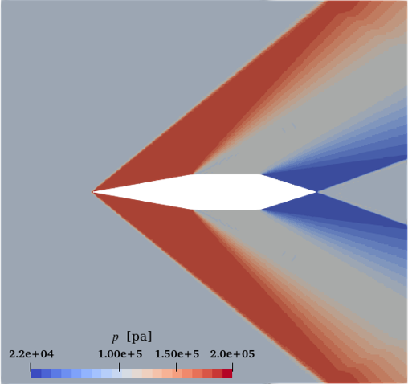
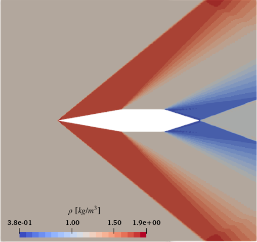
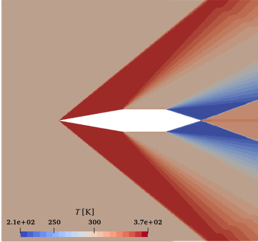
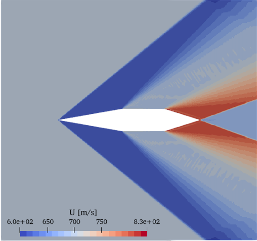
압력, 밀도, 온도 contour에서는 shock을 경계로 물리량이 증가하고, velocity magnitude에서는 반대로 속도가 감소한다. 이는 초음속 유동이 압축 충격파를 통과할 때 나타나는 전형적인 compressible-flow behavior와 일치한다.
Mesh dependency를 먼저 정성적으로 확인하기 위해 동일한 조건에서 약 50k, 100k, 200k cell의 pressure contour를 비교하였다. 비교 시에는 nose shock의 위치와 기울기, shock 주변의 압력 구배가 격자 증가에 따라 어떻게 달라지는지를 확인하였다.
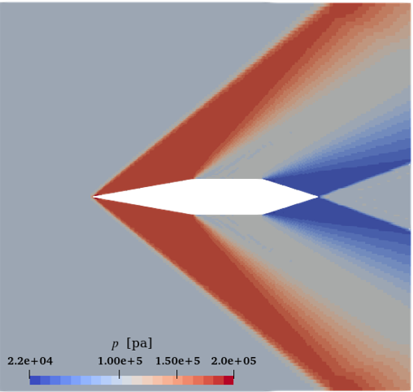
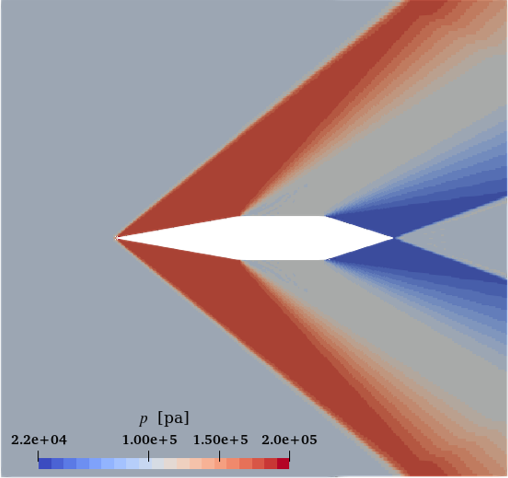
세 격자 모두 nose에서 발생하는 oblique shock과 전체 압력장 구조를 거의 같은 위치에서 포착하였다. Mesh가 세밀해질수록 shock 주변의 pressure gradient가 조금 더 선명해지지만, 전체 contour만 놓고 보면 50k와 200k의 차이가 예상보다 크지 않았다.
Contour에서 잘 드러나지 않는 mesh 차이를 확인하기 위해 \(y=0.25\ \mathrm{m}\)의 수평선을 따라 \(x\) 방향으로 데이터를 추출하였다. 동일한 위치에서 pressure, density, temperature, velocity magnitude를 50k / 100k / 200k mesh에 대해 비교하였다.
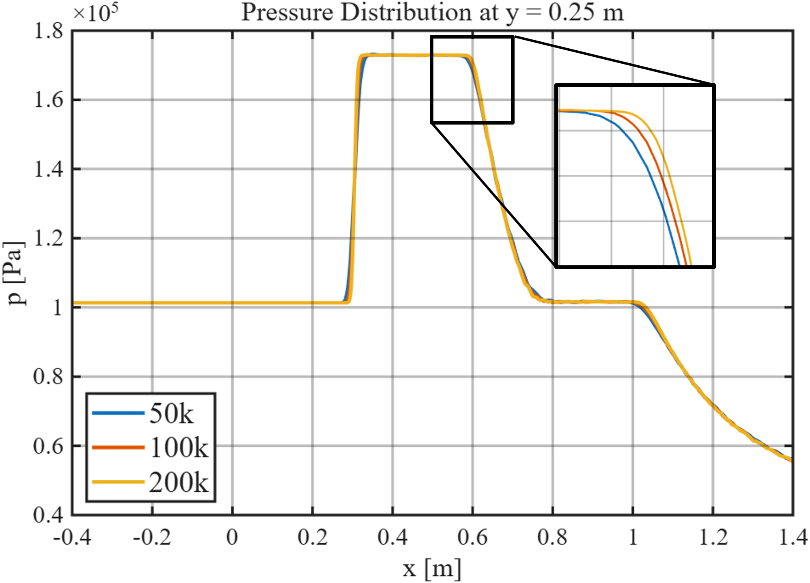
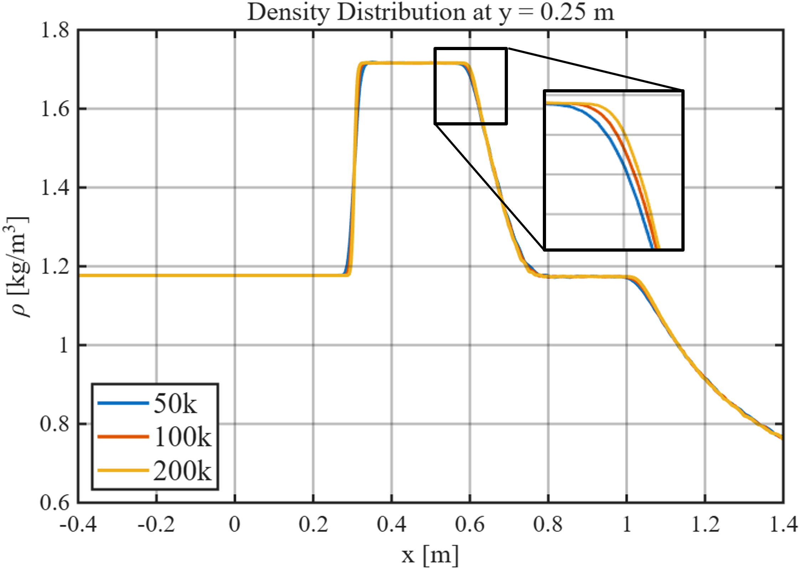
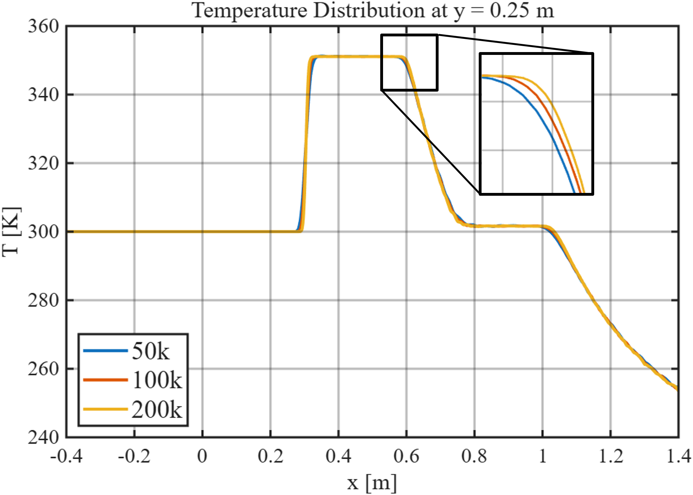
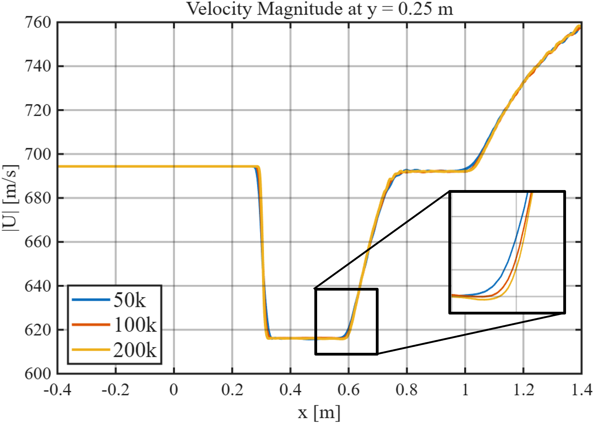
각 mesh의 profile은 대부분의 영역에서 거의 겹치며, 차이는 주로 shock과 같이 상태량이 급격히 변하는 구간에서 나타난다. 즉 coarse mesh에서도 전체적인 유동 상태는 잘 계산되지만, 불연속에 가까운 급격한 변화의 공간적 해상도는 mesh refinement의 영향을 받는다.
CFD에서 계산된 shock angle을 이론값과 직접 비교하기 위해
ParaView에서 pressure iso-surface를 생성하였다.
본 2차원 해석에서는 실제로는 일정 압력값을 갖는 iso-contour line에 해당하며,
\(p=137100\ \mathrm{Pa}\)의 contour를 추출하여 각 mesh에서
50k_Isosurf.csv, 100k_Isosurf.csv,
200k_Isosurf.csv로 저장하였다.
전체 iso-contour에는 여러 영역이 포함될 수 있으므로, nose에서 발생하는 upper shock만 사용하기 위해 \(0.05 \le x \le 0.40\), \(y>0\)의 점들을 선택하였다. 선택된 shock point에 대해 다음과 같이 1차 직선 fitting을 수행하였다.
\[ y=ax+b \]Shock line의 기울기가 \(a\)이므로 CFD shock angle은
\[ \beta_{\mathrm{CFD}} = \tan^{-1}\left(|a|\right) \]로 계산하였다. 이때 \(b\)는 실제 iso-contour의 위치에 의해 결정되는 절편이며, shock angle 계산에는 기울기 \(a\)만 사용하였다. 그래프에서는 각도 차이만 명확하게 보기 위해 CFD와 theory line을 동일한 nose point에서 시작하도록 다시 그렸다.
이론 shock angle은 \(M_1=2.0\), \(\theta=10^\circ\), \(\gamma=1.4\)를 이용하여 \(\theta-\beta-M\) 관계식의 weak-shock solution을 계산하였다.
\[ \tan\theta = 2\cot\beta \frac{M_1^2\sin^2\beta-1} {M_1^2(\gamma+\cos2\beta)+2} \]계산된 이론값은 \(\beta_{\mathrm{theory}}=39.313932^\circ\)이다.
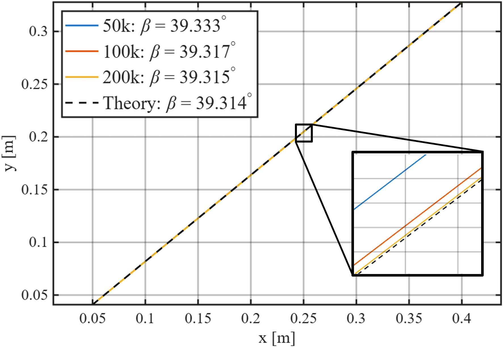
| Mesh | \(\beta_{\mathrm{CFD}}\) [deg] | Error [%] | \(R^2\) |
|---|---|---|---|
| 50k | 39.332997 | 0.048494 | 0.99999670 |
| 100k | 39.317345 | 0.008683 | 0.99999935 |
| 200k | 39.314676 | 0.001894 | 0.99999974 |
상대오차는 다음 식으로 계산하였다.
\[ \mathrm{Error} = \frac{ \left|\beta_{\mathrm{CFD}}-\beta_{\mathrm{theory}}\right| }{ \beta_{\mathrm{theory}} } \times100 \]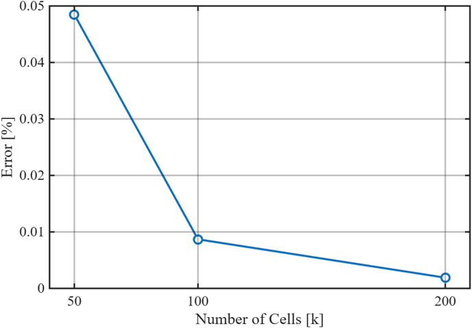
Shock angle뿐 아니라 shock 전후의 상태량도 이론과 비교하였다. 여기서는 \(x=0.25\ \mathrm{m}\)의 수직 sampling line을 사용하였다. Pressure gradient \(|dp/dy|\)가 최대가 되는 위치를 shock position으로 정의하고, shock 전후의 안정된 구간에서 평균값을 계산하여 State 1과 State 2를 정의하였다.
먼저 oblique shock의 upstream normal Mach number는
\[ M_{n1}=M_1\sin\beta \]이다. 이후 normal-shock relation을 normal component에 적용하면 pressure ratio는
\[ \frac{p_2}{p_1} = 1+ \frac{2\gamma}{\gamma+1} \left(M_{n1}^2-1\right) \]density ratio는
\[ \frac{\rho_2}{\rho_1} = \frac{ (\gamma+1)M_{n1}^2 }{ (\gamma-1)M_{n1}^2+2 } \]이며, ideal-gas relation으로부터 temperature ratio는
\[ \frac{T_2}{T_1} = \frac{p_2/p_1}{\rho_2/\rho_1} \]으로 계산된다. Shock 이후 normal Mach number는
\[ M_{n2} = \sqrt{ \frac{ 1+\frac{\gamma-1}{2}M_{n1}^2 }{ \gamma M_{n1}^2-\frac{\gamma-1}{2} }} \]이고, 전체 downstream Mach number는
\[ M_2 = \frac{M_{n2}} {\sin(\beta-\theta)} \]로 구할 수 있다. CFD에서는 동일하게 State 1과 State 2의 평균 상태량을 사용하였으며, Mach number는
\[ M=\frac{|U|}{a}, \qquad a=\sqrt{\gamma RT} \]로 계산하였다. 각 물리량의 상대오차는 shock angle과 동일하게
\[ \mathrm{Error} = \frac{ \left|Q_{\mathrm{CFD}}-Q_{\mathrm{theory}}\right| }{ Q_{\mathrm{theory}} } \times100 \]으로 정의하였다.
| Mesh | \(p_2/p_1\) Error [%] |
\(\rho_2/\rho_1\) Error [%] |
\(T_2/T_1\) Error [%] |
\(M_2\) Error [%] |
|---|---|---|---|---|
| 50k | 0.031548 | 0.027801 | 0.056836 | 0.051506 |
| 100k | 0.023037 | 0.006364 | 0.027382 | 0.028633 |
| 200k | 0.008524 | 0.002956 | 0.010075 | 0.006235 |
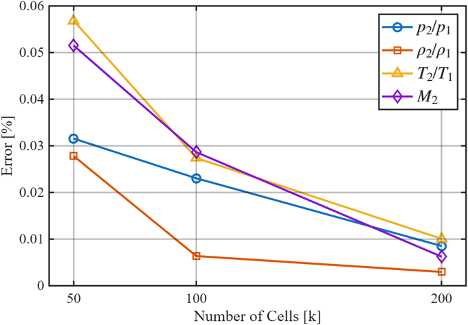
모든 물리량에서 mesh를 세밀하게 할수록 이론값과의 오차가 감소하였다. 특히 \(M_2\)는 100k에서 200k로 증가할 때 상대오차가 비교적 크게 감소하였다. \(M_2\)는 독립적으로 직접 주어지는 값이 아니라 \(M_2=|U_2|/\sqrt{\gamma R T_2}\)와 같이 post-shock velocity와 temperature로부터 계산되는 값이다. 따라서 mesh refinement에 따라 \(U_2\)와 \(T_2\)가 함께 수렴하고, 두 변수의 오차가 최종 Mach number 계산에서 일부 상쇄될 경우 \(M_2\)의 상대오차가 개별 상태량보다 빠르게 감소할 수 있다.
다만 이를 단순히 error cancellation만의 결과로 단정할 수는 없다. 본 결과에서는 post-shock 상태 자체가 mesh refinement에 따라 이론값에 수렴하는 경향과, \(U_2\)와 \(T_2\)를 함께 사용하는 Mach number 계산 특성이 동시에 반영된 것으로 해석하였다.
본 계산에서는 먼저 pressure, density, temperature, velocity magnitude contour를 통해 Mach 2 외부유동에서 형성되는 oblique shock을 확인하였다. 이후 50k / 100k / 200k mesh를 비교하고, 단순한 contour 비교를 넘어 line profile, shock angle, shock 전후 상태량을 단계적으로 검증하였다.
Shock angle은 pressure iso-contour를 이용해 추출한 뒤 linear fitting으로 계산하였고, \(\theta-\beta-M\) relation의 weak-shock solution과 비교하였다. 또한 \(p_2/p_1\), \(\rho_2/\rho_1\), \(T_2/T_1\), \(M_2\)를 oblique-shock theory와 직접 비교하여 mesh refinement에 따라 오차가 일관되게 감소하는 것을 확인하였다.
개인적으로는 50k mesh에서도 결과가 예상보다 정확하다는 점이 가장 인상적이었다. 처음에는 cell 수 차이가 contour와 정량값 모두에서 훨씬 크게 나타날 것으로 예상했지만, 실제로는 coarse mesh에서도 주요 shock 구조를 잘 포착했고 shock-angle 및 상태량 오차 역시 매우 작았다. Mesh를 증가시키면 그 작은 오차가 추가로 감소하며 이론해에 더 가까워졌다.
따라서 적어도 본 \(M_1=2.0\), \(\theta=10^\circ\)의 sharp-nose 외부유동 조건에서는 OpenFOAM 계산이 oblique-shock theory와 매우 잘 일치하였다. 정성적인 contour, mesh refinement, shock angle, shock 전후 상태량을 모두 비교한 결과 본 해석 case에 대한 validation을 완료할 수 있었다.